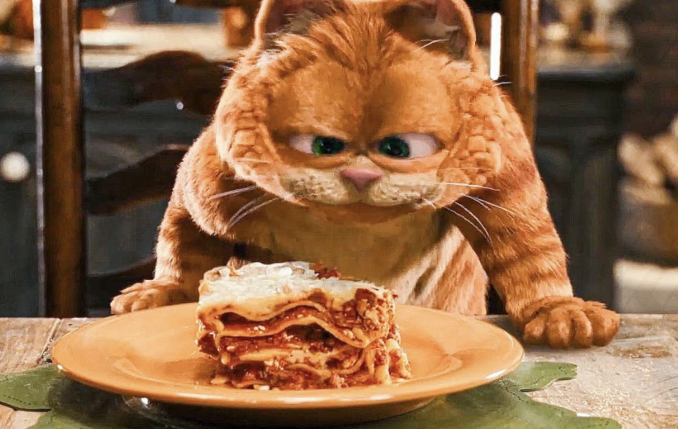

Lasagna
Main Page

Description:
Ingredients:
- ½ pound ground pork, ½ pound lean ground beef
- A diced onion is cooked until translucent with the ground meat.
- A can of tomato sauce and a can of crushed tomatoes.
- Two tablespoons of parsley and one clove of garlic.
- A dash of sugar
- Dried basil, dried oregano, salt, and black pepper.
- Uncooked noodles
- Cottage cheese, parmesan, and shredded mozzarella.
- Eggs
Steps